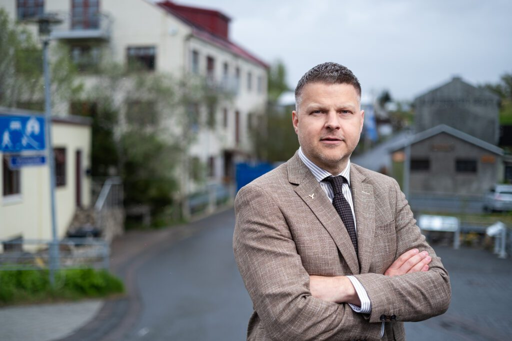
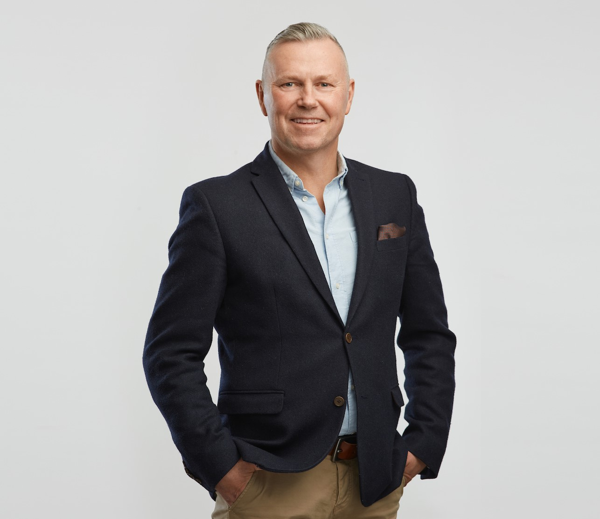
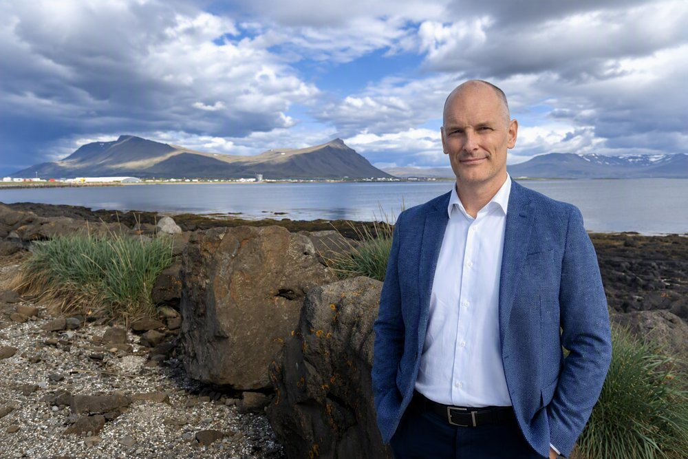

Bæjarstjórar og sveitarstjórar
1. Hver er borgarstjóri í Reykjavík?
Svar
Hildur Björnsdóttir 👑
2. Hver er bæjarstjóri í Kópavogi?
Svar
Ásdís Kristjánsdóttir
3. Hver er bæjarstjóri í Hafnarfirði?
Svar
Þórður Þórarinsson
4. Hver er bæjarstjóri í Garðabæ?
Svar
Almar Guðmundsson
5. Hver er bæjarstjóri í Mosfellsbæ?
Svar

Hilmar Gunnarsson
6. Hver er bæjarstjóri á Seltjarnarnesi?
Svar

Þór Sigurgeirsson
7. Hver er bæjarstjóri í Reykjanesbæ?
Svar
Vilhjálmur Árnason
8. Hver er bæjarstjóri á Akureyri?
Svar
Berglind Ósk Guðmundsdóttir
9. Hver er bæjarstjóri í Árborg?
Svar
Bragi Bjarnason
10. Hver er bæjarstjóri á Akranesi?
Svar

Sturlaugur Haraldsson
11. Hver er sveitarstjóri í Múlaþingi?
Svar
Dagmar Ýr Stefánsdóttir
12. Hver er bæjarstjóri í Fjarðabyggð?
Svar
Jóna Árný Þórðardóttir
Í hvaða sveitarfélagi fer ... með völd?
13. Í hvaða sveitarfélagi er Hildur Björnsdóttir 👑 borgarstjóri?
Svar
Reykjavík
14. Í hvaða sveitarfélagi er Ásdís Kristjánsdóttir bæjarstjóri?
Svar
Kópavogur
15. Í hvaða sveitarfélagi er Þórður Þórarinsson bæjarstjóri?
Svar
Hafnarfjörður
16. Í hvaða sveitarfélagi er Almar Guðmundsson bæjarstjóri?
Svar
Garðabær
17. Í hvaða sveitarfélagi er Hilmar Gunnarsson bæjarstjóri?
Svar
Mosfellsbær
18. Í hvaða sveitarfélagi er Þór Sigurgeirsson bæjarstjóri?
Svar
Seltjarnarnes
19. Í hvaða sveitarfélagi er Vilhjálmur Árnason bæjarstjóri?
Svar
Reykjanesbær
20. Í hvaða sveitarfélagi er Berglind Ósk Guðmundsdóttir bæjarstjóri?
Svar
Akureyri
21. Í hvaða sveitarfélagi er Bragi Bjarnason bæjarstjóri?
Svar
Árborg
22. Í hvaða sveitarfélagi er Sturlaugur Haraldsson bæjarstjóri?
Svar
Akranes
23. Í hvaða sveitarfélagi er Dagmar Ýr Stefánsdóttir sveitarstjóri?
Svar
Múlaþing
24. Í hvaða sveitarfélagi er Jóna Árný Þórðardóttir bæjarstjóri?
Svar
Fjarðabyggð